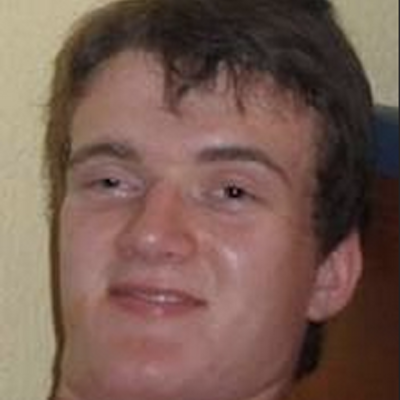
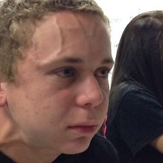
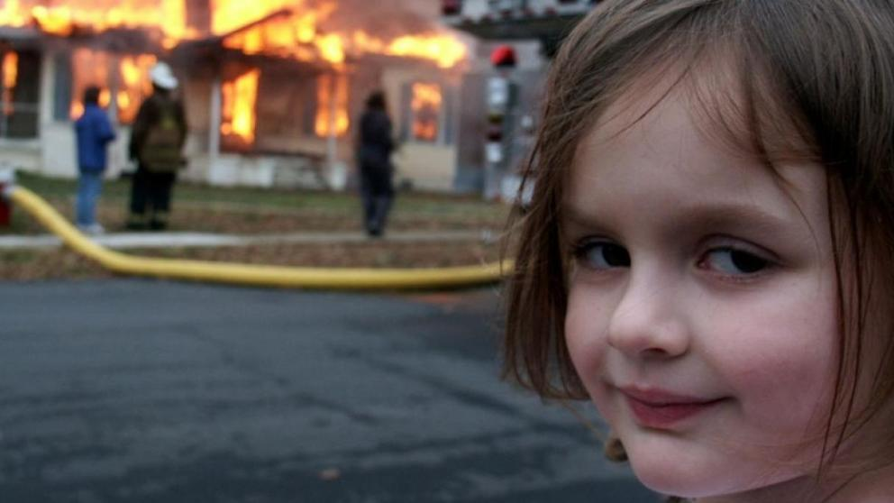
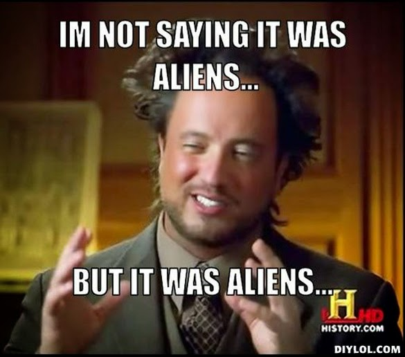
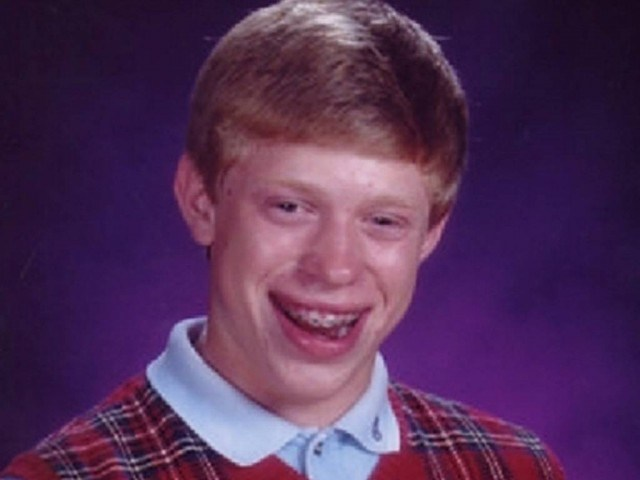

| IMAGEN |
AÑO DEL MEME |
MEJOR CONOCIDO COMO |
|
2007 |
Succes kid |
|  |
2011 |
Stoner Stanley |
|  |
2013 |
Exploded |
|  |
2004 |
Disaster Girl |
|  |
2016 |
Ancient aliens |
| 
|
2012 |
Bad Luck Brian |
SIGNIFICADOS
|
- |
- |
Uno de los memes más populares es el llamado
'Success Kid', la foto de un niño pequeño con el puño cerrado y
cara de éxito que muchos habréis visto o compartido alguna vez. El
origen del meme se remonta al 26 de agosto del año 2007, cuando el
pequeño Sammy Griner, de 11 meses de edad, fue fotografiado por su
madre, Laney Griner, un día de playa. La madre del pequeño
compartió su fotografía en Flickr y Getty y desde entonces, la
instantánea empezó a formar parte de los avatares y perfiles de
muchos usuarios de redes sociales ganando en popularidad. Aunque no
fue hasta 2011, cuando una versión editada con Photoshop la
convirtió en viral. Recientemente 'Success Kid' fue noticia al
crear una campaña de crowdfunding para ayudar a su padre. Sammy
Grine ayudó a que su padre pueda enfrentarse a un posible
trasplante de riñón y costear el tratamiento previo y posterior.
Todos conocemos este popular meme llamado
'Stoner Stanley' o 'El chico fumado'. Se trata de una serie de
imágenes macro con una foto de un joven que parece estar bajo la
influencia de la marihuana.El origen de este meme lo encontramos en
Reddit, allí el 25 de noviembre de 2011 el usuario randomdave subió
la foto de este joven con la cara roja y gesto de haber consumido
marihuana. La imagen iba acompañada del texto "Estar en [10] no es
siempre bonito". La imagen empezó a correr como reguero de pólvora
por internet después de que el usuario de Reddit Vivalocaaa creo
una página en Quickmeme para que la gente pudiera crear memes a
partir de la foto. El meme creció más aun cuando en marzo de 2012
aparecieron en la red nuevas imágenes de Stoner Guy en las que
también aparecía claramente colocado. Stoner Guy es en realidad
Connor Sinclair, un chico británico que actualmente lleva una vida
normal, aunque para internet siempre será conocido como el chico
fumado.
La imagen tiene diferentes títulos, el más
famoso es: "Tratando de aguantar un pedo cuando te sientas al lado
de la chica linda en clase". El protagonista explicó en una
entrevista surgió la foto: "Yo y mi amigo Mathew estábamos
pasándolo bien en clase, somos amigos desde hace tiempo así que él
sabe que puedo hacer caras extrañas y me sacó la fotografía.
Hicimos un tuit y lo publicamos. Eso fue en octubre del 2013". El
meme despegó gracias Reddit y Imgur, "Un par de meses después me
desperté y vi que mi teléfono estaba colapsado. Tenía cientos de
notificaciones de todas las redes sociales acerca de que mi
fotografía estaba dando vueltas. Su difusión ha tenido altos y
bajos desde ahí, pero ahora parece estar volviendo a subir".
Michael asegura que no lo importan las bromas y la "fama" que ha
generado su foto, pero dice que "me arrepiento de no haberla
inscrito en copyright porque quizás podría haber ganado mucho
dinero".
La imagen puede dar la sensación de que ha sido
la niña la que ha quemado la casa de sus vecinos a los que no
soportaba o que le habían hecho alguna putada. La fotografía fue
sacada por el fotógrafo Dave Roth en enero del 2004, en su Flickr,
y la protagonista es su hija Zoe que entonces tenía 5 años. Todo
empezó cuando Roth hizo pública una foto donde, durante la sesión
de entrenamiento de bomberos con fuego real, Dave llamó a su hija,
Zoe para fotografiarla y, por casualidad, está posó sonriendo
diabólicamente delante de la casa en llamas. ¿Cómo empezó a hacerse
viral? La imagen empezó a compartirse desde el Flickr de Dave y
cuatro años más tarde en octubre de 2008. Pero el verdadero
pelotazo a finales de ese mismo el 2008 cuando la imagen apareció
en la popular web Buzzfeed. Desde entonces millones de personas en
el mundo se han encargado de compartir la imagen de esta diabólica
pero adorable niña.
Se trata de una imagen del ufólogo y presentador
de televisión Giorgios Tsoukalos en el programa “Ancient
Aliensâ€� del History Channel que en España se llamó "Generación
Alien". En ella aparece un alterado Tsoukalos con su extravagante
pelo que tiene una explicación sencilla y clara para cualquier
misterio y pregunta de la vida: Aliens. Giorgio A. Tsoukalos nació
el 14 de marzo de 1978 en Lucerna, Suiza es un escritor y ufólogo
suizo, de origen griego, presentador de televisión especializado en
la teoría de los antiguos astronautas. La teoría de los antiguos
astronautas, también conocida como teoría de los alienígenas
ancestrales e hipótesis de paleocontacto, sostiene que seres
extraterrestres han visitado el planeta Tierra y que estos seres
han sido responsables de alguna forma del origen y desarrollo de
las culturas humanas, las tecnologías y las religiones. Algunas de
las cosas que sostienen que construcciones como las pirámides en
Egipto o las líneas de Nazca entre otras sólo pudieron efectuarse
con ayuda de alienígenas. Además sostienen que los aliens salen
mencionados en antiguos textos religiosos como el Ramayana a en
varias partes de la Biblia.
Conocido en internet como 'Bad Luck Brian' se trata
de la foto de un chico con cara de pardillo, aparato en los dientes
y un horrible jersey de cuadros con muy mala suerte. Detrás de este
meme se esconde Kyle Craven, un arquitecto de 25 años que vive en
Ohio, Estados Unidos. En 2012 Ian Davies, amigo de Kyle desde la
infancia, cogió una foto del anuario y la subió a Reddit con las
frases “Hace el test de conducir… le arrestan por ir
borrachoâ€�. Fue ese mismo año después de que el meme corriera como
reguero de polvora por todo Internet cuando el propio Kyle desveló
su identidad en Reddit. Lejos de tomárselo mal y odiar el haberse
xonvertirse en meme, Kyle parece estar contento con la fama que le
ha traído Internet. Tanto es así que tiene un canal de Youtube con
50.000 suscriptores .
SIGNIFICADOS DE LOS DIFERENTES TIPOS
Memes Normies:
Estos son denominados a veces como "antimemes", se caracterizan por
representar una gráfica simple, como una captura de Twitter,
Facebook; reflejando en su encabezado la página que publica dicha
imagen acompañada con sus redes sociales. En estos "memes" se pueden
adjuntar imágenes en contexto totalmente trivial, o simplemente se
puede apreciar un texto sin ningún trasfondo, totalmente directo y
consumible a un publico netamente heterogéneo.
Dank Memes:
Son muy recurrentes en los países de habla inglesa, su rasgo más
importante es la exageración, suelen haber imágenes sin sentido que
indirectamente causan risa y se popularizan mucho. Suelen hacer
sátira de los "Normies" usando su comodín más importante: la
exageración. Además usan todas las estructuras pero con un detalle
que puede ser la saturación de colores, haciendo que sea un modelo
muy propio. Entran en temas como política, movimientos sociales,
economía, historia universal y cultura popular. Si eres muy atento
podrás aprender algunas referencias de estas ramas, y algo muy
importante como el lenguaje inglés.
Shitposting:
Shitposting (del inglés shit, «mierda»; y posting, «publicar»)
es una jerga de Internet que se refiere al acto de publicar
contenido de «calidad pobre, agresiva, irónica y actuando como trol
(mayormente con propósitos cómicos)»​ en un foro de Internet o
red social, en algunos casos para desviar las discusiones o para
lograr que el sitio sea inútil para sus visitantes regulares.